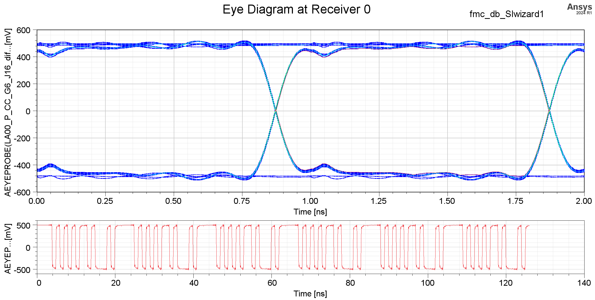
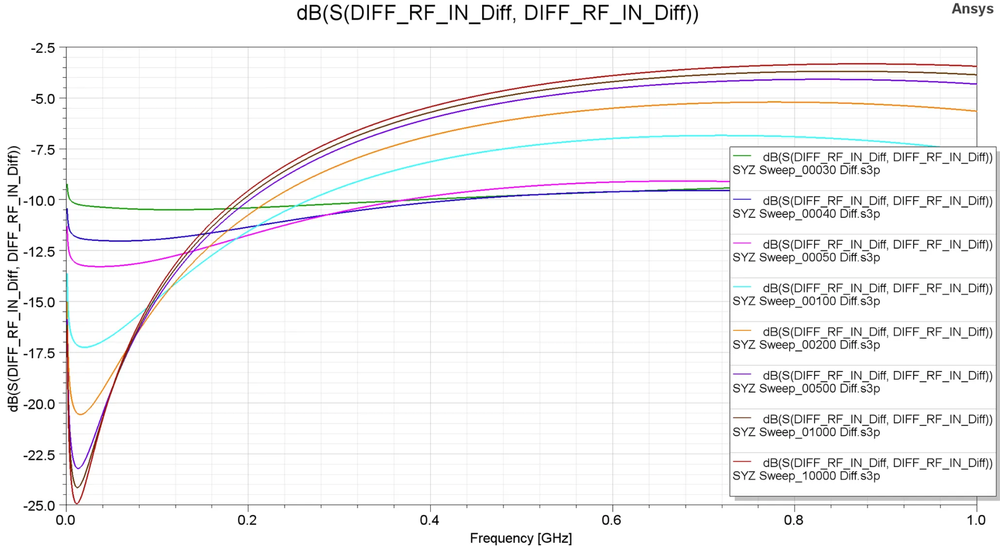

RTL/Firmware Project
LowLatENCy (LOLENC) Quantum Computer Control System based on RFSoC

Full arbitrary waveform generator which is C programmable on field with TCP. Lolenc system has 3 cores: TCP Server, ELF Runner, and Moninj respectively. All cores are running in baremetal. TCP Server receives the command from server with LWIP server. TCP Server makes interrupt to ELF Runner, and ELF Runner loads ELF file from DRAM and run it or forcibly stop running ELF. Load, and stop ELF code is written in ARMv8 assembly. Moninj monitors TTL signal and receives override command from TCP Server, and send it to TTL modules.

User select CPP file through IQUIP GUI, and make schedule to run it on the master server. Then, master find highest priority of schedule, and compile the CPP width GNU compiler. Linker script which is written to run on ELF Runner links all user CPP object file and bsp object file. Then, master send ELF file to ELF Runner through TCP Server.


User can select RF source: DDS or AWG. DDS generates sin wave with given frequency, amplitude, and phase parameters. Changing frequency does change only accumulating phase value, which changes phase continuously. However, some experiments require phase change in stepwise, and to meet timing constraints, 2 pipelined MAC which utilizes Vedic algorithm is used.

Due to the limitations of FPGA resources, synthesizing multiple DDS modules to create multi-tone signals is constrained. To overcome this, we implemented AWG functionality. Unlike superconducting qubits, ion trap-based quantum computers require longer pulse durations. To address this, we developed a module that controls data transactions between DRAM and DAC.

Typically, register-based AXI accesses return a response immediately after a write operation. However, quantum computer controllers may not do so in order to prevent overflow of the module's FIFO. We have developed a method to prevent this by combining module and firmware solutions
Lolenc system is included in the enclosure which is designed with Autodesk Inventor.
After the all designs are done, we implemented the system on the real hardware.

The implemented system was utilized in real experiments and produced various experimental results, including Rabi oscillations.
Remote Ion Entanglement Experiment
Remote ion entanglement experiment. Meta stable caused by asynchronous PMT signal is fixed by two stage FF. Additionally PMOD2SMA board is used to connect FPGA and PMT which is used to detect ion fluorescence with resolution of 1.25ns.
AD9910 Control Module
The AD9910 control module handles signal generation for quantum experiments with precision timing.
Image Processing in FPGA for Photonic Machine Learning

Image display system with DVI/HDMI for SLM.

ZCU104 Display System

ZCU104 Interrupt System
Python Project
Vivado Project Manager

Generate custom IP and connect block diagram automatically based on json meta file

Lolenc block diagram is generated by Vivado Project Manager, which includes almost 45 custom IPs.
LOLENC Master Server
Lolenc control python server
Ion Trap Two Qubit Gate Pulse Shaping Optimization

Pulse shaping optimization through ADAM algorithm and analysis between experiment data and calculated data
PCB Project
FMC to EEM PCB board

Daughter board which converts FMC(VITA57.1/4) to EEM. The board includes a feature to short the TDI and TDO signals, allowing the FPGA's JTAG chain to remain intact and function properly even when the FPGA is powered on after installation. It is designed to connect to other boards via the EEM interface used in ARTIQ.

The differential signals are routed with a 100-Ohm differential characteristic impedance and are placed between ground layers to minimize external noise interference. All signals have a mismatch of less than 3mm, and the phase delay of the differential signals is also matched.
The eye diagram analysis using ANSYS SIwave confirmed that the system operates without issues at 1 Gbps.
EEM to TTL PCB board

The daughter board converts LVTTL to LVDS signals, with configurable signal direction and 50-Ohm termination using jumpers. Power can be supplied either through the EEM connector or an external power source. A 12V to 3.3V DC-DC converter circuit provides the 3.3V power supply. A buffer is used to drive a 50-Ohm impedance, ensuring the output voltage exceeds 2.0V, which meets the VIH requirements for LVTTL logic levels. The designed PCB serves as a Lolenc TTL driver, capable of controlling electronic devices with a timing resolution of 8 ns.
PMOD to SMA PCB board

50-Ohm impedance, and delay matched PCB board used in ion entanglement experiment.
PMOD to AD9910 PCB board
PCB connecting ArtyS7 FPGA to AD9910 DDS board
The designed PCB serves as a daughter board for the ArtyS7, facilitating a seamless connection with the AD9910 board. As shown in the photo, it is mounted inside an enclosure designed with Autodesk Inventor, where the AD9910 board is secured with 3D-printed structures.
Balun PCB board

PCB converting differential anaglog signal to single ended analog signal which is 100-Ohm, 50-Ohm impedance matched respectively.
To verify whether resistor termination is unnecessary on the balun input port, we extracted the IBIS model of the balun component and the IPC2581 file from the OrCAD PCB design and confirmed this through simulations using ANSYS SIwave.